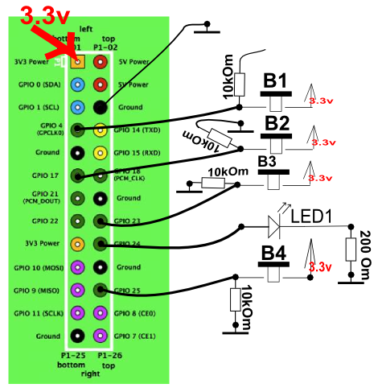
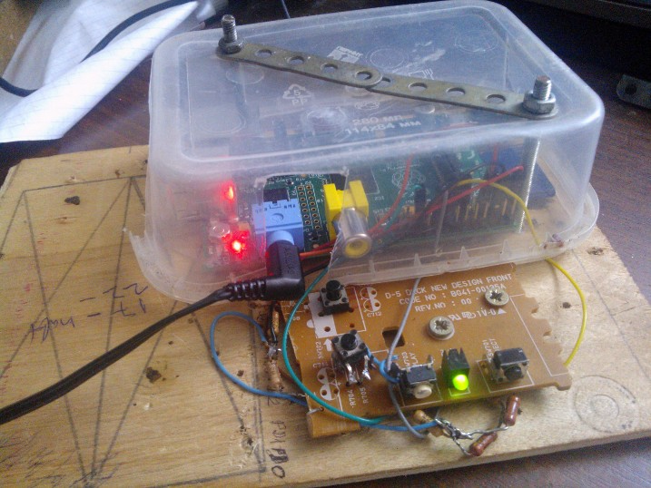

Осталось 2 часа до долгой поездки. Собираешь вещи, готовишься. Проверяешь всё. А тут бац! и плеер не работает. Печалька( На телефоне нет памяти, так что не получится с него слушать. Что же делать? Конечно же собирать самому. Особенно если есть Raspberry Pi. Сначала думаем что он должен уметь:-кнопка следующая песня-кнопка пауза-воспроизводить музыку в случайном порядке-кнопка выключение-кнопки звук больше меньше-светодиод-индикаторВ наличии была ардуинка, куча разных atmeg. Но мой выбор пал на Raspberry pi model B 512 Mb. Решил, что это будет самый простой вариант. У неё есть разъёмы gpio, которые можно использовать для кнопок и светодиода. На малинке стоит Raspbian. Писать решил на python'e через редактор nano, работа c gpio через библиотеку RPi.GPIO, а что бы не мучиться с python кодеками и несовместимостью с arm — буду взаимодействовать со сторонним проигрывателем mplayer через subprocess.Popen(...). Схема сверх простая:

Реализация примерно такая (извините за такой вид. Просто сделано за пол часа...)Фотки

Устанавливаем mplayer:
sudo apt-get install mplayer
Эээээх… программа… только не орите! Я знаю что это самое ужасное, что я когда либо писал. Когда ехал сильно мучила совесть. Особенно за использование sleep(). Фейспалмная программа на питоне:
import RPi.GPIO as GPIO
from time import sleep
import subprocess
import os
from random import randint
Mfiles = []
path = "/home/pi/Music/" #Папка, где находится музыка
files = os.listdir(path)
MPFiles = images = filter(lambda x: x.endswith('.mp3'), files);
i=0
for mf in MPFiles:
MPFiles[i] = path+mf
i = i+1
Mfiles = list(MPFiles)
Mlen = len(Mfiles)
count = 1
CurrentSong = 0
i=0
while i= 10: #если кнопку держат долго,то выходим
s = "q"
LedState = 0
else: #иначе пауза или воспроизведение
if i > 0:
player.stdin.write("p")
if LedState != 1:
LedState = 1 #если воспроизведение, то зажигаем светодиод
else:
LedState = 2 #иначе моргаем
i=0
if GPIO.input(4): #звук выше
player.stdin.write("*")
if GPIO.input(17): #звук ниже
player.stdin.write("/")
if GPIO.input(23): #следующая композиция
player.stdin.write(">")
if LedState == 2: #тут режимы светодиода
if lastLed == 1:
GPIO.output(24, GPIO.LOW)
lastLed = 0
else:
GPIO.output(24, GPIO.HIGH)
lastLed = 1
else:
if LedState == 1:
GPIO.output(24, GPIO.HIGH)
else:
GPIO.output(24, GPIO.LOW)
sleep(0.2) #Фэйспалм
player.stdin.write("q") # когда выключаемся, то закрываем плеер
Итак. Почти всё готово. Осталось сделать так, чтоб скрипт запускался при старте нашей малинки
1) редактируем файл
sudo nano /etc/init.d/StartPlayer
2) пишем в редакторе нано это:
#! /bin/sh
# /etc/init.d/StartPlayer
sudo python /путь_к_питнон_скрипту.py
вместо /путь_к_питнон_скрипту.py напишите путь к вашему питон скрипту
3)
sudo chmod 755 /etc/init.d/StartPlayer
sudo update-rc.d StartPlayer defaults
Всё готово! Загружаем музыку в папку /home/pi/Music/
Ставим на вашей SD карточки замок lock, чтобы при случайном выключении питания ничего не сломалось и всё. Плеер готов!!!
P.S. может позже сделаю следующую версию плеера. С нормальным исполнением и программой(без sleep()) и без стороннего плеера